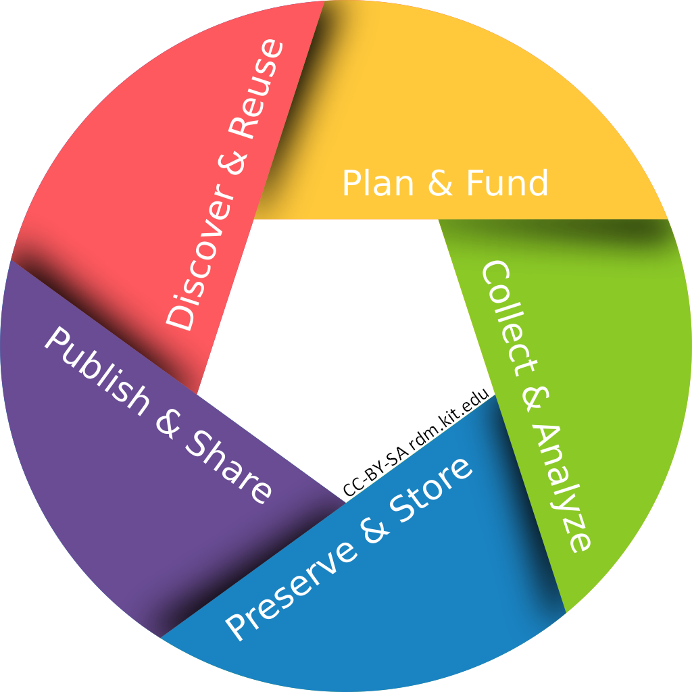

1.1 Introduction to Research Data Management
This section provides a short introduction into the principles of research data mangement. Its purpose is to provide the basic knowledge of research data management needed for Chapter 2.
Please note that this section will not go into too much detail as there are many courses out there describing research data management. At the end of this section links will be provided about where to find further information.
Syllabus Elements
Learning Objectives
At the end of the section the learners can ...
- Demonstrate the importance of research data management
- Differenciate efficient from inefficient research data management
- Explain the FAIR principles
- Explain the difference between a PID and an URL
Target Audience
- attendees of this course
Duration
- 15 minutes
Prerequisites
- Complete 00 Welcome
Learning Tools
- list any tools that are necessary to be used to complete the learning unit
- examples include required software, access to resources, etc.
Research data management (RDM)
What is Research Data?
The content in this section is adapted from the DFG Guidelines on the Handling of Research Data.
"Research data is an essential foundation for scientific work. The diversity of this data reflects the wide range of different scientific disciplines, research interests and research methods. Research data might include measurement data, laboratory values, audiovisual information, texts, survey data, objects from collections, or samples that were created, developed or evaluated during scientific work. Methodical forms of testing such as questionnaires, software and simulations may also produce important results for scientific research and should therefore also be categorised as research data."

Research data cycle by RDM@KIT licensed under the CC BY-SA 4.0 license
@KIT: More information regarding research data management (RDM) at KIT can be found at the website of the service team RDM@KIT.
@KIT: Have a look at the Guidelines for Responsible and Substainable Research Data Management at KIT. (German version: "Leitlinien zu einem verantwortungsvollen und nachhaltigen Forschungsdatenmanagement am KIT")
Summary
The content in this section is adapted from RDM@KIT.
Good research today must not only be rigorous, innovative and insightful - it must also be organized! Research processes increasingly generate and process large amounts of data that should be available for future use. Following FAIR principles, this data must be indexed, documented, archived, and reusable.
In the following section you will learn, how to document your research data.
References
Further information on RDM
- Research Data Management at KIT RDM@KIT
- forschungsdaten.info (DE)
- German National Research Data Infrastructure (NFDI)
Tutorials on RDM
- Current trainings on RDM from RDM@KIT (EN and DE)
- OpenCourse at KIT
- forschungsdaten.info - overview on tutorials and materials (EN and DE)
- forschungsdaten.info - calender (DE)
- Helmholtz Information & Data Science Academy (HiDA)
Suggested Reading
- Deutsche Forschungsgemeinschaft (DFG) (2015): DFG Guidelines on the Handling of Research Data. https://www.dfg.de/download/pdf/foerderung/grundlagen_dfg_foerderung/forschungsdaten/guidelines_research_data.pdf.
- Deutsche Forschungsgemeinschaft (DFG) (2019): Guidelines for Safeguarding Good Research Practice. Code of Conduct. https://doi.org/10.5281/zenodo.3923601.
- Baker (2016): 1,500 scientists lift the lid on reproducibility. Nature 533 (7604), 452–454. https://doi.org/10.1038/533452a.
- Perkel (2023): How to make your scientific data accessible, discoverable and useful. Nature 618 (7967), 1098–1099. https://doi.org/10.1038/d41586-023-01929-7.
- Wilkinson et al. (2016): The FAIR Guiding Principles for scientific data management and stewardship. In: Scientific data 3, S. 160018. https://doi.org/10.1038/sdata.2016.18.